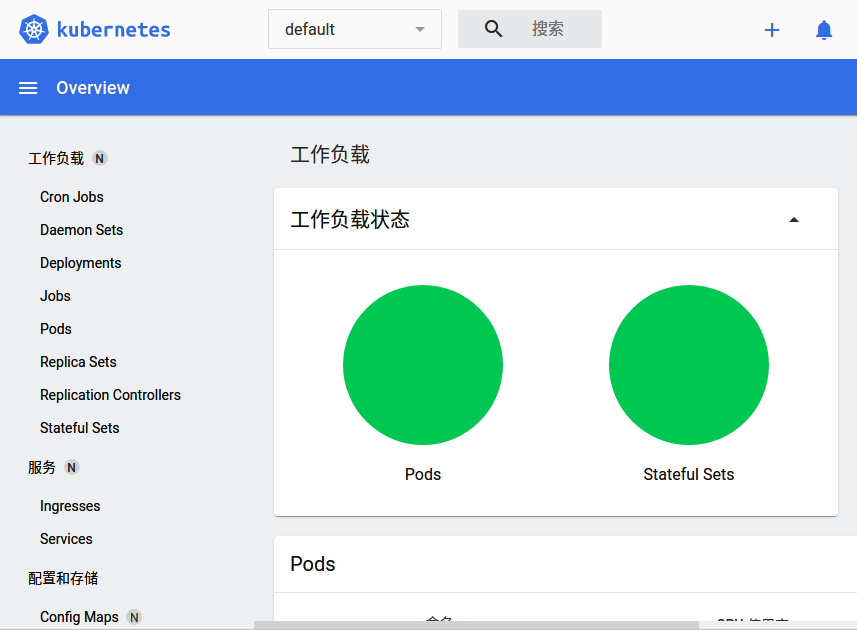

使用Minikube尝鲜Kubenetes
本文档仅适用于Linux，其他平台请参考官方文档。
安装
首先，我们需要下载并安装Minikube：
curl -LO https://storage.googleapis.com/minikube/releases/latest/minikube-linux-amd64
sudo install minikube-linux-amd64 /usr/local/bin/minikube
Start
启动一个Minikube实例：
minikube start
Minikube将使用Docker（需要提前安装好，安装Docker请参考Docker 官方文档）创建一个Kubenetes环境：

kubectl 命令
在 minikube 中，可以使用minikube kubectl命令使用kubectl，以下是获取所有POD资源的示例命令：
minikube kubectl -- get pods -A
我们仍然可以正常安装和使用独立的kubectl命令：
curl -LO "https://dl.k8s.io/release/$(curl -L -s https://dl.k8s.io/release/stable.txt)/bin/linux/amd64/kubectl"
sudo install kubectl /usr/local/bin/kubectl
以上minikube kubectl命令的等价版本如下：
kubectl get pods -A
获取存储类名称：
kubectl get sc
Minikube 默认情况下会启动名为 standard 的默认存储类，存储类的名称我们将会在部署TDengine时用到。
仪表盘
Minikube 提供了Kubenetes仪表盘，使用如下命令启动：
minikube dashboard
将会在浏览器打开仪表盘网址，用于查看资源：
